There are lots of great guides for setting up an environment to do data science. For my purposes though they generally lack two things:
- They’re designed for Mac/Linux and I run Windows at work
- They just don’t match my exact personal taste/environment
This guide is intended to be useful for anyone trying to get set up for data science in python on windows. I think most of the steps are fairly generic, and I’ll make an effort to highlight the parts that are more opinionated. The sections below will go over the core software that will need to be installed, and some handy customizations.
edit 2020-02-17 - I realized I wanted make as well, so I added a section on that. Also made note of an issue with launching interactive python from git bash, as well as solutions.
edit 2020-08-04 - I started using pylance for a python language server, discovered SQL formatter, and switched to the regular Vim plugin.
edit 2020-10-28 - Add instructions for clearing out an old install, do everything as a user level install. I cleaned up some other instructions as I went through as well.
edit 2020-11-02 - Remove reference to pyenv-win. It’s too much of a hassle. Unfortunately my best advice there is to get access to a *NIX environment somehow.
Install VS Code
First we need an editor to actually work in. I’m a huge fan of VS code for this. It’s lightweight, extensible, free and open source, and very actively developed. Every month there’s a new release with some fancy thing that makes my life easier.
App installation
Head to the VS code download page and pick the Win64 user installer.
Go through the install process, I think all the defaults are fine, so just keep hitting next. You can optionally add in things like “Add open with code action to Windows Explorer”. It won’t directly impact the rest of what we’re doing, just integrates code with the rest of your desktop a little more fully.
You can sign in with either a GitHub or Microsoft account to enable setting sync. If you use VS code on multiple machines, or just want to easily restore all your settings if you get a new computer I recommend enabling it. See the person icon in the lower left corner.
On the work machine I’m testing this guide on I’m getting a settings sync error, even though the same install is syncing on my home machine. I love computers. Oh well, it means I’ll get to really walk through a fresh install for this guide.
Extensions
What makes VS code so great is all its extensions. Here are some that are great:
- Bracket Pair Colorizer 2 colour codes your brackets. Super helpful for debugging.
- Dracula Official is a nice dark theme. The Material themes are also nice.
- GitLens integrates a lot of git functionality into VS code, things like showing who made what changes inline in your code.
- indent-rainbow colour codes your indentation level, similar to the brackets
- markdownlint gives style suggestions when writing markdown files (like this guide!)
- Material icon theme makes the icons in the file explorer a little nicer
- Python is pretty core for this for obvious reasons
- Pylance is a new language server for Visual Studio, it offers nicer autocomplete and seems worth using.
- Better TOML handles the config format of python packages
- The Remote Development extension pack lets you run VS code on a local machine while developing on a remote system, Docker container, or WSL install.
- SQL Formatter will clean up any sql queries you write
- SQL Server (mssql) is very handy if you interact with SQL server. The first time you open this it will run a bunch of installers in the background.
- Vim - Only install this if you know what Vim is and you want to use its keybindings. If you do this extension will make you very happy, if you don’t it will make you very sad.
- Editorconfig - Lets VS Code parse editorconfig files.
Finish up later
There’s more configuration to do in VS code, but prior to that let’s set up the actual applications we’ll use with it.
Install git and bash
Like any sort of coding work, data science is done best under version control, and git is the defacto standard for that. Bash is not as obviously essential to coding/data science, but it comes with git, and using it for everything rather than the Windows shells will make it easier to apply instructions from other guides in the future, since most of them will assume you’re using bash. Plus I like bash way more than the command prompt or powershell.
git does not require any special admin privileges to install. Go to the Git download page and Choose 64-bit Git for Windows Setup and run the installer. First part is to read (if you want) and accept the license:
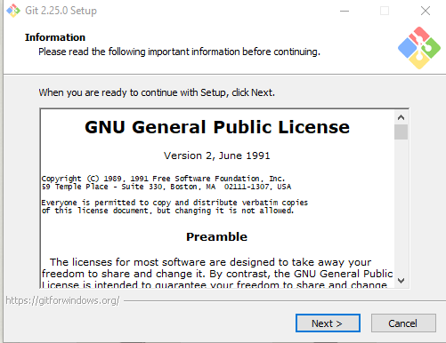
The default path should be fine, but take note of where it’s being installed because we’ll need to point VS code to it later
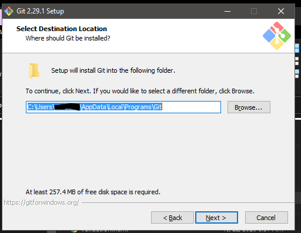
On the components selection screen I deselect git gui because I only ever want the terminal. If you like or want to try the gui you could leave that checked. I also check “Check daily for Git for Windows updates” because I don’t want to have to remember to update.
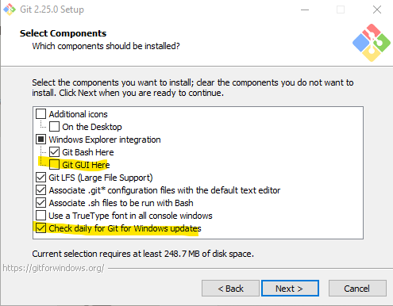
The next thing you’ll be prompted for is for the default editor. If you’re comfortable with vim/nano/whatever you can change it to that. I’m going to use VS code because it’s the editor I’ll be using for everything else, and I’m going to add vim bindings to it anyway:
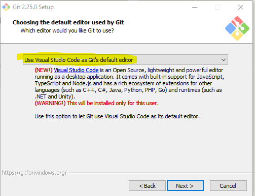
Next we get to pick the default branch name for new repositories. Historically this has been “master” but most organizations are moving away from that. I’ll pick “main”.
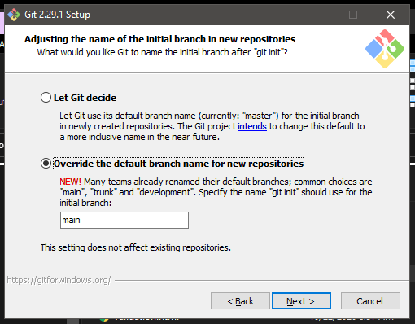
At the next prompt leave it on the default, we want VS code and other tools to know git exists.
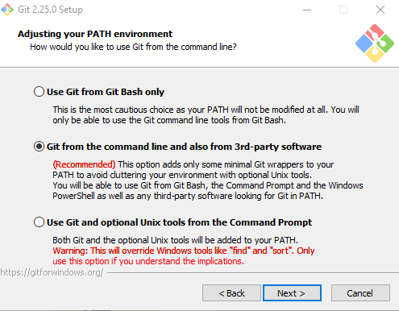
For the SSH executable we’ll use openssh. Later we’ll configure remote development with VS code and also have to use openssh there. If you use and like putty you could swap this out, but note that VS code (at least at time of this writing) doesn’t support putty, so you’ll have to set things up separately there.
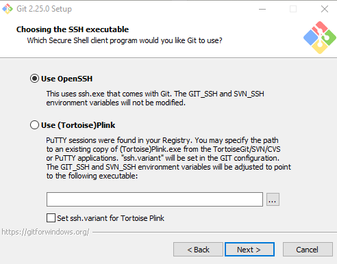
Next up is the https transport backend. If this is a personal machine you can probably just leave it on OpenSSL. If it’s a work computer you should probably switch to “Use the native Windows Secure Channel library”. For example, at work my git repos are hosted on an on prem TFS server, so I definitely want my AD Domain service to validate me.
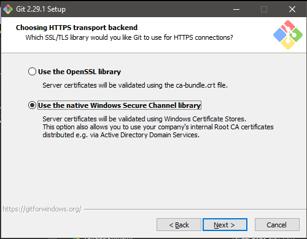
At the next prompt we again want the default. Windows and *NIX systems use different symbols to denote line endings. This setting will automatically convert to the Windows format when you pull down changes, but leave them *NIX style when you push them up. This will ensure everyone is getting the correct format of text file when pulling down changes.
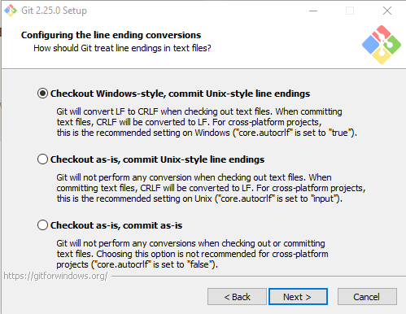
For the default behaviour for git pull I’m fine with fast-forward or merge. If you have a different preference by all means go for it.
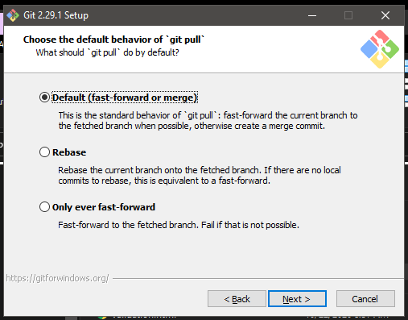
Leave the console on MinTTY, it works nicer than the other. I thought you might need it to be the Windows default console to integrate with VS code but that is not the case. In fact it seems to break console integration with VS code. Go figure.
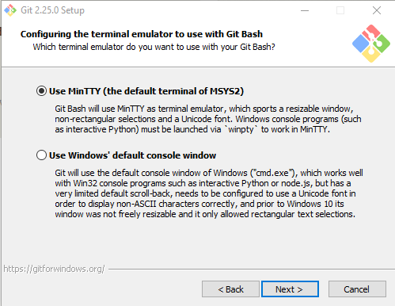
Using a credential manager means that once you’ve authenticated yourself for a repository you won’t have to do it every time. Unless you’re super paranoid leave this turned on.
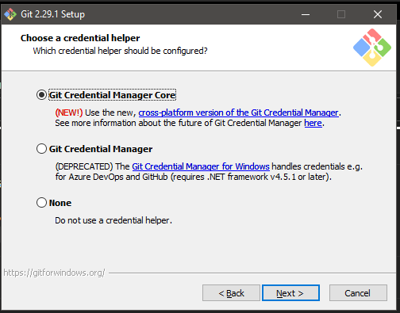
I just left the extra options on default
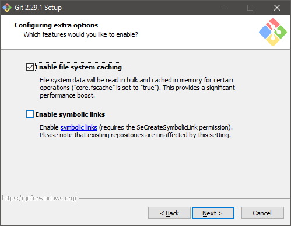
I’m going to try enabling this feature, not being able to open a python console in bash was annoying.
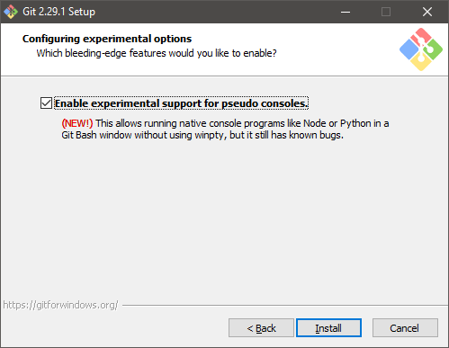
Customizing git
There are a couple handy things that are useful to customize about git. For one, VS Code is going to make a .vscode folder anywhere we open a folder with it. We’re never going to want to commit that file to version control, so we’ll create a global gitignore file (as opposed to the more standard repository specific ones) and exclude that file. I got this idea from this blog, so credit there. In your %UserProfile%\.config\git folder, create a file named ignore. Mine is quite basic at this point:
*.vscodeIf you find your setup generates other files you’d like to ignore put them here, but don’t use this file for language specific stuff like .ipynb-checkpoints, leave that to project specific .gitignore files.
The other thing that’s nice to do is clean up your default prompt. Notably, git bash by default includes MINGW64 in the prompt. I guess this is the $MSYSTEM$ environment variable, but I can’t imagine why I’d care to see that in my prompt. The other stuff it includes by default are pretty handy, but if you don’t like them you can modify the same file I’m going to point to to update your setup.
The file that contains your prompt information should be in either %UserProfile%\AppData\Local\Programs\Git\etc\profile.d\git-prompt.sh. This is a standard bash script, so if you’re familiar with bash scripting, or modifying your bashrc in Linux or Mac this will be familiar. If not, it’s generally pretty readable. Make a backup of it and fiddle. To get rid of the MINGW64 we just have to find the lines that say
PS1="$PS1"'\[\033[35m\]' # change to purple
PS1="$PS1"'$MSYSTEM ' # show MSYSTEMand delete them or comment them out. I also got rid of
PS1="$PS1"'\n' # new lineso that my conda environment would be on the same line as the rest of my setup info.
Set up ssh
This will actually work exactly the same as Linux, which is nice. GitHub has nice docs on how to generate keys and associate them with your GitHub account, so I won’t reiterate that here. Anything you can connect to via SSH rather than password you should though. It’s more secure, and more convenient.
SSH note
I had an old install of putty when I first set up git bash. Even though I told it to use OpenSSH I guess I still had putty set somewhere in my environment. I had to modify the GIT_SSH environment variable for my system to point to the git ssh utility, which in my case was at C:\Program Files\Git\usr\bin\ssh. Most people shouldn’t have to do this.
Additional utilities
Git bash has decent functionality out of the box, but there may be additional utilities you want to install. In my particular case, I’d like to be able to use make in my projects. Thanks to this gist I found that it’s pretty easy to do. I’ll reproduce the make install instructions here, but all credit for this part goes to the original author.
Wherever you installed git bash there should be a mingw64 folder. My home machine did a system install, so I found it in C:\Program Files\Git\mingw64, but my work one was a user level install, so that one ended up in %UserProfile%\AppData\Local\Programs\Git\mingw64. You can always find where it is by right clicking the shortcut to git bash in your start menu and hitting properties, that will show you the path.
Keep in mind you can easy add
make, but it doesn’t come packaged with all the standard UNIX build toolchain–so you will have to ensure those are installed and on your PATH, or you will encounter endless error messages.
- Go to ezwinports.
- Download
make-4.1-2-without-guile-w32-bin.zip(get the version without guile). - Extract zip.
- Copy the contents to your
Git\mingw64\merging the folders, but do NOT overwrite/replace any existing files.
That was all I had to do to make the basic makefiles that I wanted to use. As noted above, if you want to actually build c packages or something your process will likely be more complex. For a great beginner friendly intro to makefiles in the context of python projects, check out calm code.
Further reading
The main git page has tons of resources. I’ve also collected a few that I found useful under my Tagpacker page.
Install Miniconda
Next up we install Miniconda to handle python and all its libraries for data science. You could go with Anaconda over Miniconda for a complete setup out of the box, but I want to do all my actual work in custom environments, so having all that stuff in the base environment is just bloat. Open up the link to the Win64 MiniConda installer, download and run the installer.
We’re avoiding using admin access so you can do this with even a locked down system so leave the option on “Just Me”
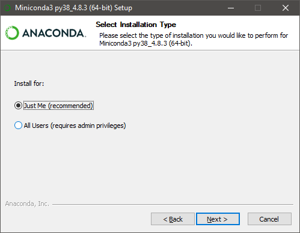
Default install path should be fine.
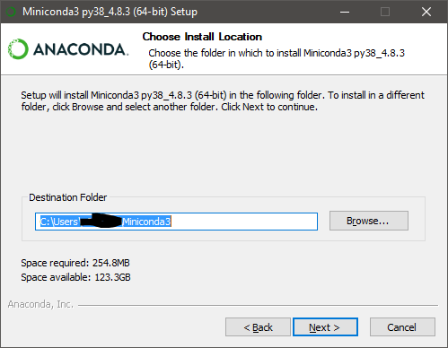
Check the box to add Anaconda to the system PATH environment variable, this will allow you to use conda from git bash. I’m unchecking the box that sets conda as the default system python because I want to have a pure python install available through pyenv (more on that later).
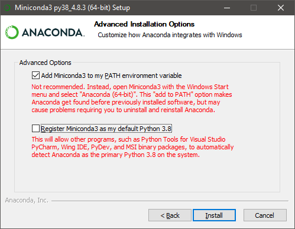
Finally, open up anaconda prompt and run conda init bash. This will allow you to run conda commands from within bash. By default this will also activate the conda base environment whenever you open a terminal. We don’t actually want that, so restart git bash to allow the first command to take effect and then run conda config --set auto_activate_base false.
There’s one last thing we’ll have to do. The conda init bash command added some code that runs whenever you start a git bash terminal in order to allow you to run conda commands. That code is saved in ~/.bash_profile. It will look something like this:
# >>> conda initialize >>>
# !! Contents within this block are managed by 'conda init' !!
eval "$('/c/Users/<your username>/Miniconda3/Scripts/conda.exe' 'shell.bash' 'hook')"
# <<< conda initialize <<<What happens there is that whenever you open bash it runs all the commands in .bash_profile first. VS code for some reason does not run this script when you open a bash prompt in the built in terminal. Instead it runs ~/.bashrc because why should anything be easy? Here’s the fix I’m using, thanks to This StackOverflow post.
move .bash_profile to .bashrc with mv ~/.bash_profile ~/.bashrc. Create a new ~/.bash_profile file that just points to ~/.bashrc so they’ll stay in sync whether you’re using regular git bash or VS code git bash. If you want to add anything else to your bash settings later just edit .bashrc. So now in your home directory (%UserProfile%) create a .bash_profile file (either using touch .bash_profile from bash or in VS code, you won’t be able to from Explorer) and put in the following lines:
if [ -f ~/.bashrc ]; then
source ~/.bashrc
fiThat should take care of it for conda installation
Actually building environments
Conda environment management is a big separate topic. Their documentation is really good, and I refer to it regularly.
Back to VS code
User settings
VS code comes mostly with sensible defaults, but there are a few things I like to change. In VS code hit F1 and type Open settings (JSON). If you don’t see that option (it didn’t pop up for me the first time I tried it) just open settings and look for a setting that tells you to update it in settings.json. Below are my settings, minus the stuff that just got added through configuring the extensions described above:
{
"diffEditor.renderSideBySide": true,
"workbench.editor.enablePreviewFromQuickOpen": false,
"workbench.editor.enablePreview": false,
"workbench.colorTheme": "Dracula",
"workbench.iconTheme": "material-icon-theme",
"editor.rulers": [88],
"editor.suggestSelection": "first",
"editor.acceptSuggestionOnEnter": "off",
"editor.minimap.enabled": false,
"editor.lineNumbers": "relative",
"explorer.confirmDelete": false,
"editor.wordWrap": "on",
"python.formatting.provider": "black",
"python.linting.enabled": true,
"python.linting.flake8Enabled": true,
"python.languageServer": "Pylance",
"git.confirmSync": false,
"git.autofetch": true,
"editor.codeActionsOnSave": null,
"search.exclude": {
"**/node_modules": true,
"**/bower_components": true,
"**/env": true,
"**/venv": true
},
"files.watcherExclude": {
"**/.ipynb_checkpoints/**": true,
"**/$tf/**": true,
"**/.git/objects/**": true,
"**/.git/subtree-cache/**": true,
"**/node_modules/**": true,
"**/env/**": true,
"**/venv/**": true,
"**/.hypothesis/**": true,
},
"files.exclude": {
"*.sublime-*": true,
"**/__pycache__": true,
"**/.DS_Store": true,
"**/.git": true,
"**/.hypothesis/**": true,
"**/.ipynb_checkpoints": true,
"**/.pytest_cache": true,
"**/.vscode": true,
"**/*.log": true,
"**/*.lst": true,
"**/$tf": true,
"**/node_modules": true,
"venv": true
}
}Most of the settings have fairly clear names, and if you put them in your settings.json you’ll get a little mouseover tip that will tell you what they do.
While you can hand code in the option to have VS code use git bash it’s probably easier to hit F1 again and select “Terminal: Select Default Shell” and choose it there. That will add a line to your settings that tells VS code to use git bash.
Further Resources
There’s tons of stuff to learn about VS code to make it super handy. At a minimum, check out their keyboard shortcuts. I’m collecting other useful resources (with a decent amount of overlap with vim stuff) on my tagpacker.
Cleaning up an old install
I wanted to test drive my instructions before passing them along to a colleague. In order to be sure they’d actually work the way I think they should I needed to clear out my old environment. I’ll document my steps here. Hopefully this will be useful for anyone else looking to start a fresh environment on Windows.
Uninstall Apps
Even if you installed a program as a user level install, you’ll still be prompted for an Administrator password if you try and remove it from “Add/Remove Programs” in the control panel because… Windows. Running the actual uninstall exe file works fine though.
For git this should be located at %UserProfile%\AppData\Local\Programs\Git\unins000.exe. The uninstaller won’t remove that folder itself so delete it after you’ve run it.
VS code is in a similar location and follows a similar process %UserProfile%\AppData\Local\Programs\Microsoft VS Code\unins000.exe.
Miniconda as a user level install is in a slightly different place: %UserProfile%\Miniconda3\Uninstall-Miniconda3.exe You’ll be prompted for an admin password a couple times, but if you click “no” it still seems to work, which is cool I guess. It will prompt you to reboot and when it comes back up you should be clear.
Remove miscellaneous crud
Depending on how long you’ve been using your machine and how many different installs you’ve done you may or may not have these files. Here’s a list of the things I checked for and then removed from my machine:
Orphan start menu entries in
%UserProfile\AppData\Roaming\Microsoft\Windows\Start Menu\ProgramsRenmants in
C:\ProgramData. In my case I had a folder for jupyter
Remove config files
If you like how your configuration is set up there’s no major harm in keeping these things. I’m just removing them to make sure I have a fair comparison to how a fresh install would go. All paths in the list of stuff I’ve removed are relative to %UserProfile%.
- .conda
- .config/configstore
- .continuum
- .cookiecutter_replay
- .cookiecutters
- .ipynb_checkpoints
- .ipython
- .jupyter
- .matplotlib
- .poetry
- .software
- .vscode
- AppData
- AppData
- AppData
- AppData
- AppData-data
- AppData
- AppData
- AppData
- AppDataTools
- AppData
- AppData
- AppData
- AppData
- AppData
- AppData
- AppData
- .bash_history
- .bash_profile
- .flake8
- .gitconfig
- .git-credentials
- .gitignore_global
- .python_history
As you can see, managing a python development environment creates a lot of crud on your system.
Wrapping up
That’s about it! After following this guide you should have a very comfy software setup in Windows to do data science from.